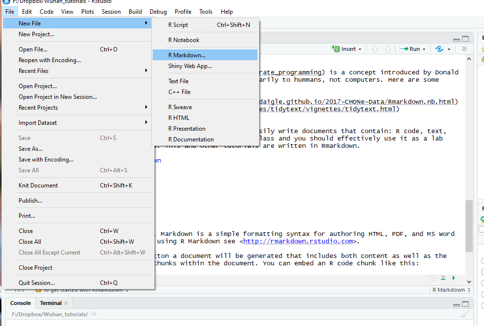
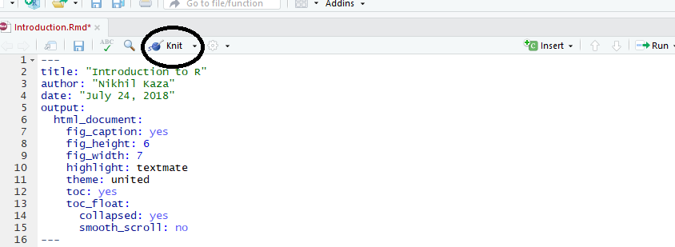
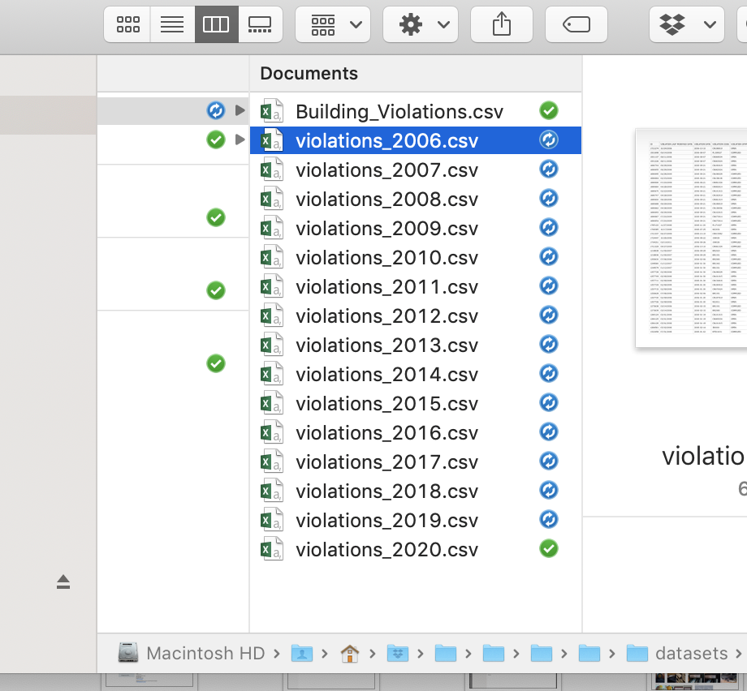

Introduction to R & R Markdown

Preliminaries
To get started with this course, you will need R. I strongly recommend Rstudio. To function correctly, RStudio needs R and therefore both need to be installed on your computer. If you already have these installed, please see this page to make sure you have up to date versions of the software. We will talk about other required software as we proceed further.
Why R?
- Great for reproducibility
- Great for statistics
- Great for data analysis and visualization
- Interdisciplinary & Extensible
- Open source & Cross Platform
- Most GIS operations can be done in R
See R-ecology for more details.
Actually, I see it as part of my job to inflict R on people who are perfectly happy to have never heard of it. Happiness doesn’t equal proficient and efficient. In some cases the proficiency of a person serves a greater good than their momentary happiness. – Patrick Burns: R-help (April 2005)
Why not Python? Or Julia? Or C++?
Mostly because I don’t know them well/or at all. They are probably great, but R works for me, for the most part. See Sebastian’s post on Why Python?.
Good Practices
- Keep track of who wrote what code at the top of the file and its purpose.
- Use comments liberally using “#”.
- Avoid
setwd()and use only relative paths. If you must, usesetwd()only at the top of the script. - Distinct components of the code should ideally be separate and be accessed using
source(). This improves legibility. - Use a consistent style within your code. For example, name all dataframes to something ending in _df.
- Keep all of your source files for a project in the same directory, then use relative paths as necessary to access them.
- Memory is a problem for R, because it stores all objects in memory (mostly true). Follow good practice of deleting objects that you don’t need using
rm(). It is rarely necessary for you to use garbage collectiongc(). If you are running to into problems constantly- Consider upgrading RAM (It is becoming cheaper by the day).
- Consider if you can break up the data set and independently process them and reassemble them.
- Find alternative libraries and methods.
Basic R
Once you have R & Rstudio installed, run the following to see if it is working correctly.
1 + 1 #add 1 + 1
# [1] 2
a<-2:5 #Assign vector 2:5 to a variable a
a #print a to console
# [1] 2 3 4 5
runif(5) #Generate 5 random numbers
# [1] 0.07659150 0.37128507 0.01888288 0.49317023 0.21917203
sessionInfo() #What is my computer environment? (Mac, Windows, libraries etc.)
# R version 3.6.1 (2019-07-05)
# Platform: x86_64-apple-darwin15.6.0 (64-bit)
# Running under: macOS Mojave 10.14.6
#
# Matrix products: default
# BLAS: /Library/Frameworks/R.framework/Versions/3.6/Resources/lib/libRblas.0.dylib
# LAPACK: /Library/Frameworks/R.framework/Versions/3.6/Resources/lib/libRlapack.dylib
#
# locale:
# [1] en_US.UTF-8/en_US.UTF-8/en_US.UTF-8/C/en_US.UTF-8/en_US.UTF-8
#
# attached base packages:
# [1] stats graphics grDevices utils datasets methods base
#
# loaded via a namespace (and not attached):
# [1] compiler_3.6.1 magrittr_1.5 bookdown_0.12 tools_3.6.1
# [5] htmltools_0.3.6 yaml_2.2.0 Rcpp_1.0.2 stringi_1.4.3
# [9] rmarkdown_1.14 blogdown_0.14 knitr_1.23 stringr_1.4.0
# [13] digest_0.6.20 xfun_0.8 evaluate_0.14The output of the last two commands will be different on your computer than what is being shown.
Exercise
- If a vector a is (4,6,5,7, 10, 9, 4, 15), how many elements are over 7? What position in the vector are they?
- if b is 3, what is a+b? If b is (2,5), what is a+b?
Literate programming and RMarkdown
Literate Programming is a concept introduced by Donald Knuth. The fundamental premis is that one should write code that communicates primarily to hummans, not computers. Here are some examples:
R Markdown allows you easily write documents that contain: R code, text, images, links, etc. You are required to use it for this course and you should effectively use it as a lab notebook for your data analysis everywhere. This and other tutorials in this sequence are written in Rmarkdown.
Getting started with Markdown
To start a new Markdown file, open up Rstudio and follow the following picture.

The created template is quite informative. Use Knit on the top to see the output of the template.

The parameters between the two --- is a YAML header. YAML(YAML Ain’t Markup Language) is a human-readable data serialization language. Most of the document rendering settings are there. Experiment with them. By simply changing the output format, we can get a doc file or a html file.
The rest of the document is formatted according to markdown syntax. Below are some useful syntax to structure your documents.
# Heading 1
## Heading 2
*italics*
**bold**
~~strikethrough~~
~subscript~
^superscript^

[link](www.link.com)
$E = mc^2$
$$y = \mu + \sum_{i=1}^p \beta_i x_i + \epsilon$$Other syntax are available at Rstudio website.
R Markdown
To include R code in your file you can insert a code chunk with
- the keyboard shortcut Ctrl + Alt + I (OS X: Cmd + Option + I)
- the Add Chunk command in the editor toolbar
- or by typing the chunk delimiters ```{r} and ```
Chunk output can be customized with knitr options⧉, arguments set in the {} of a chunk header. The main ones are include, cache, echo, message, warning and fig.cap
Here is an example
summary(cars) #cars is a dataset included in base R
# speed dist
# Min. : 4.0 Min. : 2.00
# 1st Qu.:12.0 1st Qu.: 26.00
# Median :15.0 Median : 36.00
# Mean :15.4 Mean : 42.98
# 3rd Qu.:19.0 3rd Qu.: 56.00
# Max. :25.0 Max. :120.00It is often the case that when markdown files get big, it is useful to cache the output using the cache option for the code chunks.
Embedding graphics created from R is also very easy.
plot(cars$speed, cars$dist)
Exercise
- Extend the template that creating Rmarkdown file with one more R command and one more graphic on cars dataset
Embedding graphics created from external programs is also straight forward. There are many ways to do it (for example using the  as noted above), but I prefer the following approach.
library(knitr) # include_graphics is a command in knitr package. We need to explictly initialise it once per session using the library command.
include_graphics("./img/anaconda.png") # Change the file path suitably.Figure 1: An external image
Reading real data into R
In this course, we are going to follow the tidyverse style of programming and its associated packages. To read a comma separated file (*.csv) we are going to use read_csv command from tidyverse package.
Download the latest building violations data from building violations data from the Chicago Open Data Portal. For convenience, a local copy downloaded in 2019 is stored here.
library(tidyverse)
chicago_df <- read_csv("./datasets/Building_violations.csv")
summary(chicago_df)
# ID VIOLATION LAST MODIFIED DATE VIOLATION DATE
# Min. : 219970 Length:1682199 Length:1682199
# 1st Qu.:2846372 Class :character Class :character
# Median :4173309 Mode :character Mode :character
# Mean :4041069
# 3rd Qu.:5328152
# Max. :6404250
#
# VIOLATION CODE VIOLATION STATUS VIOLATION STATUS DATE
# Length:1682199 Length:1682199 Length:1682199
# Class :character Class :character Class :character
# Mode :character Mode :character Mode :character
#
#
#
#
# VIOLATION DESCRIPTION VIOLATION LOCATION VIOLATION INSPECTOR COMMENTS
# Length:1682199 Length:1682199 Length:1682199
# Class :character Class :character Class :character
# Mode :character Mode :character Mode :character
#
#
#
#
# VIOLATION ORDINANCE INSPECTOR ID INSPECTION NUMBER
# Length:1682199 Length:1682199 Min. : 265575
# Class :character Class :character 1st Qu.: 2306938
# Mode :character Mode :character Median :10422051
# Mean : 8062623
# 3rd Qu.:11692850
# Max. :13061126
#
# INSPECTION STATUS INSPECTION WAIVED INSPECTION CATEGORY
# Length:1682199 Length:1682199 Length:1682199
# Class :character Class :character Class :character
# Mode :character Mode :character Mode :character
#
#
#
#
# DEPARTMENT BUREAU ADDRESS STREET NUMBER STREET DIRECTION
# Length:1682199 Length:1682199 Min. : 1 Length:1682199
# Class :character Class :character 1st Qu.: 1648 Class :character
# Mode :character Mode :character Median : 3746 Mode :character
# Mean : 4151
# 3rd Qu.: 6229
# Max. :13770
#
# STREET NAME STREET TYPE PROPERTY GROUP SSA
# Length:1682199 Length:1682199 Min. : 1000 Min. : 1.0
# Class :character Class :character 1st Qu.: 20560 1st Qu.:22.0
# Mode :character Mode :character Median :154437 Median :34.0
# Mean :202155 Mean :33.8
# 3rd Qu.:367135 3rd Qu.:49.0
# Max. :678027 Max. :69.0
# NA's :1359814
# LATITUDE LONGITUDE LOCATION
# Mode:logical Mode:logical Mode:logical
# NA's:1682199 NA's:1682199 NA's:1682199
#
#
#
#
#
nrow(chicago_df)
# [1] 1682199
str(chicago_df)
# Classes 'spec_tbl_df', 'tbl_df', 'tbl' and 'data.frame': 1682199 obs. of 26 variables:
# $ ID : num 3282077 1721274 1551698 1551137 1551226 ...
# $ VIOLATION LAST MODIFIED DATE: chr "10/14/2009" "10/24/2006" "05/14/2008" "08/11/2006" ...
# $ VIOLATION DATE : chr "10/07/2009" "10/10/2006" "08/07/2006" "08/07/2006" ...
# $ VIOLATION CODE : chr "CN198019" "CN198019" "PL159027" "CN069034" ...
# $ VIOLATION STATUS : chr "OPEN" "OPEN" "COMPLIED" "OPEN" ...
# $ VIOLATION STATUS DATE : chr NA NA "05/13/2008" NA ...
# $ VIOLATION DESCRIPTION : chr "FILE BLDG REGISTRATION" "FILE BLDG REGISTRATION" "RESET LOOSE FIXTURE" "REPAIR AREAWAY WALL" ...
# $ VIOLATION LOCATION : chr NA NA "BL00947 CRT" NA ...
# $ VIOLATION INSPECTOR COMMENTS: chr NA "BUILDING NOT REGISTERED 2005-06" "RESET LOOSE FIXTURE TOILET APARTMENT 3N" "REAR AREAWAY WALLS COLLAPSING INWARD" ...
# $ VIOLATION ORDINANCE : chr "File building registration statement with Building Dept. (13-10-030, 13-10-040)" "File building registration statement with Building Dept. (13-10-030, 13-10-040)" "Reset loose plumbing fixture. (18-29-102.3)" "Failed to maintain areaway walls in sound condition and good repair. (13-196-530, 13-196-530(b), 13-196-641)" ...
# $ INSPECTOR ID : chr "BL00873" "BL00878" "BL00947" "BL00875" ...
# $ INSPECTION NUMBER : num 2811514 1135854 1528412 1426083 1426083 ...
# $ INSPECTION STATUS : chr "CLOSED" "FAILED" "FAILED" "FAILED" ...
# $ INSPECTION WAIVED : chr "N" "N" "N" "N" ...
# $ INSPECTION CATEGORY : chr "COMPLAINT" "PERIODIC" "PERIODIC" "PERIODIC" ...
# $ DEPARTMENT BUREAU : chr "DEMOLITION" "CONSERVATION" "CONSERVATION" "CONSERVATION" ...
# $ ADDRESS : chr "3918 S WELLS ST" "747 E 65TH ST" "6431 S COTTAGE GROVE AVE" "6431 S COTTAGE GROVE AVE" ...
# $ STREET NUMBER : num 3918 747 6431 6431 6431 ...
# $ STREET DIRECTION : chr "S" "E" "S" "S" ...
# $ STREET NAME : chr "WELLS" "65TH" "COTTAGE GROVE" "COTTAGE GROVE" ...
# $ STREET TYPE : chr "ST" "ST" "AVE" "AVE" ...
# $ PROPERTY GROUP : num 304205 19591 19612 19612 19612 ...
# $ SSA : num NA NA NA NA NA NA NA NA NA NA ...
# $ LATITUDE : logi NA NA NA NA NA NA ...
# $ LONGITUDE : logi NA NA NA NA NA NA ...
# $ LOCATION : logi NA NA NA NA NA NA ...
# - attr(*, "problems")=Classes 'tbl_df', 'tbl' and 'data.frame': 5042058 obs. of 5 variables:
# ..$ row : int 1446 1446 1446 1447 1447 1447 1448 1448 1448 1449 ...
# ..$ col : chr "LATITUDE" "LONGITUDE" "LOCATION" "LATITUDE" ...
# ..$ expected: chr "1/0/T/F/TRUE/FALSE" "1/0/T/F/TRUE/FALSE" "1/0/T/F/TRUE/FALSE" "1/0/T/F/TRUE/FALSE" ...
# ..$ actual : chr "41.870030772" "-87.697338652" "(41.87003077167112, -87.6973386523565)" "41.940686661" ...
# ..$ file : chr "'./datasets/Building_violations.csv'" "'./datasets/Building_violations.csv'" "'./datasets/Building_violations.csv'" "'./datasets/Building_violations.csv'" ...
# - attr(*, "spec")=
# .. cols(
# .. ID = col_double(),
# .. `VIOLATION LAST MODIFIED DATE` = col_character(),
# .. `VIOLATION DATE` = col_character(),
# .. `VIOLATION CODE` = col_character(),
# .. `VIOLATION STATUS` = col_character(),
# .. `VIOLATION STATUS DATE` = col_character(),
# .. `VIOLATION DESCRIPTION` = col_character(),
# .. `VIOLATION LOCATION` = col_character(),
# .. `VIOLATION INSPECTOR COMMENTS` = col_character(),
# .. `VIOLATION ORDINANCE` = col_character(),
# .. `INSPECTOR ID` = col_character(),
# .. `INSPECTION NUMBER` = col_double(),
# .. `INSPECTION STATUS` = col_character(),
# .. `INSPECTION WAIVED` = col_character(),
# .. `INSPECTION CATEGORY` = col_character(),
# .. `DEPARTMENT BUREAU` = col_character(),
# .. ADDRESS = col_character(),
# .. `STREET NUMBER` = col_double(),
# .. `STREET DIRECTION` = col_character(),
# .. `STREET NAME` = col_character(),
# .. `STREET TYPE` = col_character(),
# .. `PROPERTY GROUP` = col_double(),
# .. SSA = col_double(),
# .. LATITUDE = col_logical(),
# .. LONGITUDE = col_logical(),
# .. LOCATION = col_logical()
# .. )Looking at the data gives you a lot information about how the data is read and stored. You will find that quirks of data types and storage produce many unexpected results. Pay close attention to this step to avoid countless hours of debugging. For example, why is Latitude and Longitude represented as T/F rather than a number?
Exercise
It is useful to develop specific naming conventions for variables and datasets, so that your code will be legible to you later on.
- Notice that column names have spaces in them. Rename the columns replacing the space with an underscore, using
renamecommand from tidyverse package - Notice that VIOLATION DATE column is read in as a character but should really be a date. Using
mdycommand from lubridate package andmutatecommand from tidyverse, convert this column to date variable type and save it. - Notice that parsing the file resulted in a lot of errors that read_csv gracefully skipped over. Examine the data file to understand what these errors are. Can you read the file correctly, by explictly specifying the
col_typesin read_csv command. See help for read_csv.
Basic Data Manipulation
To find out the different violations issued by different bureaus and their status, we can create a contingency table using the table function.
chicago_cont_table_df <- table(chicago_df$`DEPARTMENT BUREAU`, chicago_df$`VIOLATION STATUS`)
chicago_cont_table_df
#
# COMPLIED NO ENTRY OPEN
# BOILER 24690 0 6605
# CONSERVATION 425176 5591 683412
# CONSTRUCTION EQUIPMENT 526 0 40
# DEMOLITION 11919 0 113397
# ELECTRICAL 17386 0 19927
# ELEVATOR 57378 0 28860
# IRON 5590 0 8779
# NEW CONSTRUCTION 8070 0 22008
# PLUMBING 10626 0 17719
# REFRIGERATION 12552 0 17170
# SIGNS 976 0 13615
# SPECIAL INSPECTION PROGRAM 11895 0 9229
# SPECIAL TASK FORCE 40246 0 75743
# VENTILATION 18439 0 13847
# WATER 275 0 513$ is special function that allows us access to the columns in a dataset. We use `` to access columns whose names have spaces or other special characters. Note that R is sensitive to capitalistation.
Notice that “No Entry” category is not relevant for most categories, so we ignore those records and create a barplot of this table.
chicago_df2 <- chicago_df[chicago_df$`VIOLATION STATUS` != "NO ENTRY",] #!= is logical operator meaning not equal to.
chicago_cont_table_df2 <- table(chicago_df2$`VIOLATION STATUS`, chicago_df2$`DEPARTMENT BUREAU`) # Notice the flip from before. This is done to make the barplot work.
colrs <- c("Green","Red")
barplot(as.matrix(chicago_cont_table_df2 ), main="Bar Chart", ylab = "Count", cex.lab = 1.1, cex.main = 1.4, beside=TRUE, col= colrs)
legend("topright", c("Complied", "Open"), cex=1.3, bty="n", fill=colrs)
Exercise
The above is a terrible graphic and is used for demonstration purposes only. What is wrong with this graphic?
We can also subset the dataset by restricting it to 2008-2009 and write it out a separate dataset
chicago_df %>%
filter(year(`VIOLATION DATE`) >= 2008 & year(`VIOLATION DATE`) < 2009) %>% #This will only work if you successfully used mdy function to convert VIOLATION DATE into a date format, instead of a character
write_csv("./datasets/violations_2008.csv")Notice few things that are important
- %>% is called a pipe operator. A combination function \(f(g(x))\) where \(f\) and \(g\) are functions and \(x\) is the argument can be written as x %>% f() %>% g(). You will do well to get comfortable with this pipe operator as it makes the code cleaner. It is part of magittr package, which is loaded when you call library(tidyverse) in the earlier section of the code. See this tutorial for details.
&is a logical operator.&and&&indicate logical AND and|and||indicate logical OR. The shorter form performs elementwise comparisons in much the same way as arithmetic operators. The longer form evaluates left to right examining only the first element of each vector. Evaluation proceeds only until the result is determined. The longer form is appropriate for programming control-flow and typically preferred in if clauses.I could have simply used year(.) == 2008 to achieve the same result. But in what situations will this code fail to do what you want it to do? Hint: 2008 could be stored and interpreted in R in lot of different ways (double, character, Date).
filteris function from tidyverse that subsets the data by filter rows. A corresponding function that subsets columns is calledselect.write_csvis a function that writes a dataset into a csv file.
Now consider that you want to programmatically create subsets of this data by year for each year. You can repeat the above code numerous times, each time modifying the filter function and the file path in the write_csv function. Such procedure is tedious. Instead, we can write a function that takes year as a argument, and repeatedly call the function with the right argument.
write_chicago_df_fun <- function(yr){ #yr is an argument. Avoid using names that are already other functions, such as year.
file_name_str <- paste("./datasets/violations_", yr, ".csv" ,sep="") # This will create a string "./datasets/voilations_2008.csv" when yr == 2008 and store it in the variable "file_name_str"
chicago_df %>%
filter(year(`VIOLATION DATE`) == yr) %>% # Note the ==
write_csv(file_name_str)
return() #return null, because we are already writing the dataset into a disk file.
}
for (yr2 in 2006:2020){ # I am using yr2 as a variable to avoid confusion between arguments.
write_chicago_df_fun(yr2)
}# Alternately, if you don't think that you will use the write_chicago_df_fun again you can just write a loop
for (yr2 in 2006:2020){
file_name_str <- paste("./datasets/violations_", yr2, ".csv" ,sep="") #
chicago_df %>%
filter(year(`VIOLATION DATE`) == yr2) %>% # Note the yr2
write_csv(file_name_str)
rm(file_name_str) #It is a good practise to clean up after yourself.
}
You should see all the files correctly labelled as below

Exercise
Notice that I included 2020 in the loop and R faithfully produced an empty file called
violations_2020.csv. While this is innocuous at the moment, user errors might create unexpected results. Add some error checking to the function and trap these situations. Do not simply change the for loop condition.Adapt the function and the for loop to write out files in two year increments e.g.
violations_2006_2007.csvandviolations_2008_2009.csvCan you find a more R way to replace the for loop? Hint: use
sapply.